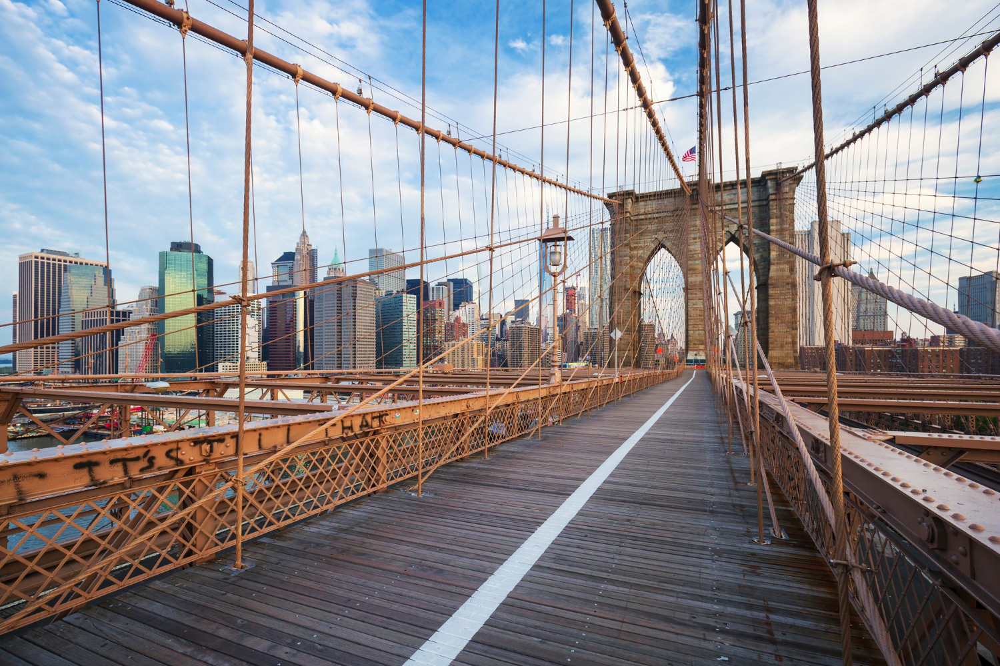
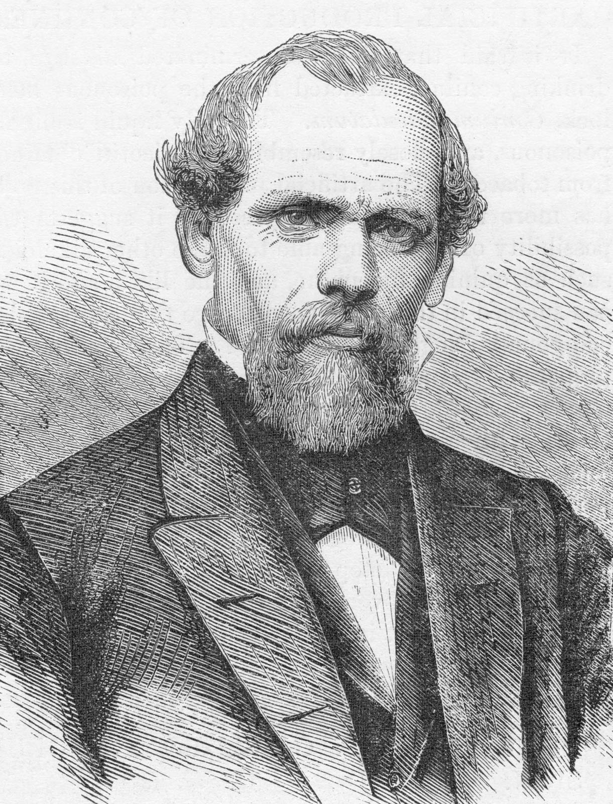

BROOKLYN BRIDGE
The Brooklyn Bridge looms majestically over New York City’s East River, linking the two boroughs of Manhattan and Brooklyn. Since 1883, its granite towers and steel cables have offered a safe and scenic passage to millions of commuters and tourists, trains and bicycles, pushcarts and cars. The bridge’s construction took 14 years and cost $15 million (more than $320 million in today’s dollars). At least two dozen people died in the process, including its original designer. Now more than 125 years old, this iconic feature of the New York City skyline still carries roughly 150,000 vehicles and pedestrians every day.
THE CREATOR
John Augustus Roebling, the Brooklyn Bridge’s creator, was a great pioneer in the design of steel suspension bridges. Born in Germany in 1806, he studied industrial engineering in Berlin and at the age of 25 immigrated to western Pennsylvania, where he attempted, unsuccessfully, to make his living as a farmer. He later moved to the state capital in Harrisburg, where he found work as a civil engineer. He promoted the use of wire cable and established a successful wire-cable factory.